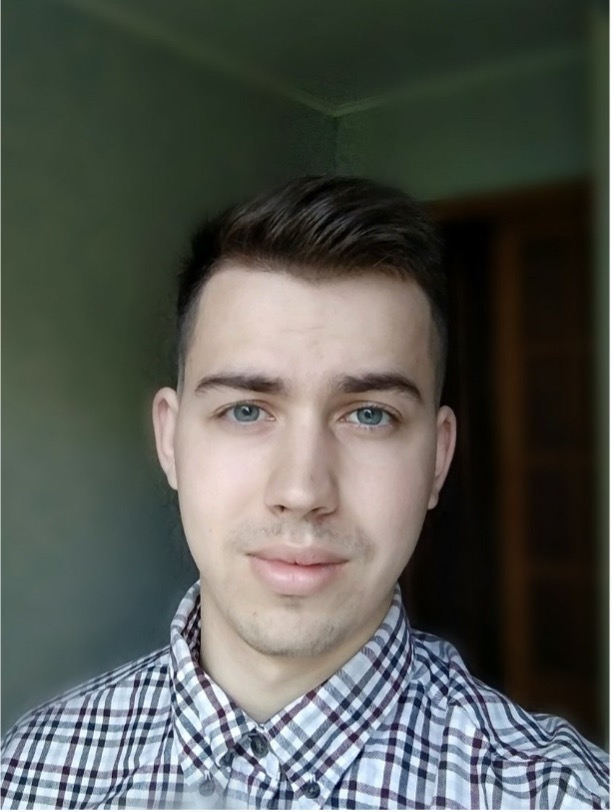

EXPERIENCE:
19.02.2019-16.11.2021 Pharmaceutical company "RECORDATI UKRAINE" Medical Representative
20.05.2017-14.02.2019 Pharmacy "911" Pharmacist
Anton Udovychenko
QA ENGINEER
CONTACTS:
Mob.phone: +380993484583
E-mail: a.udovychenko1203@gmail.com
Telegram: @anonext
Linkedin
GitHub
Ukraine, Kharkov
EDUCATION:
2021-2022
Author's course by Vadim Ksendzov "Software Testing"
Video-course A.Rusau
2013-2020
National Pharmaceutical University
(Kharkiv)
ENGLISH LANGUAGE
PRE-INTERMEDIATE (IN PROGRESS)
SOFT SKILLS:
inquisitive
sociable
purposeful
responsible
strictly observe the deadlines